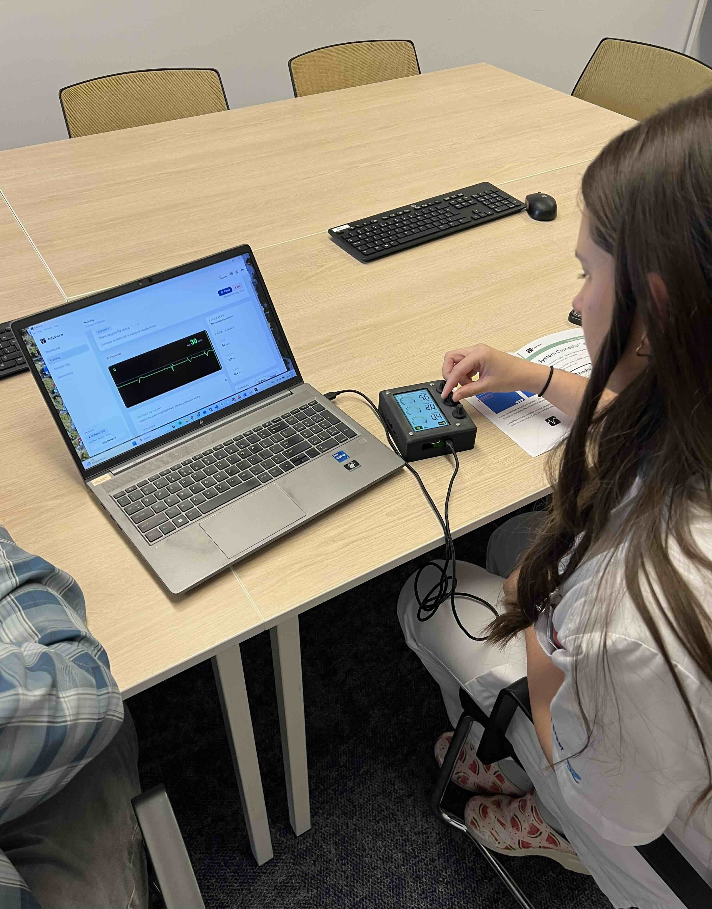
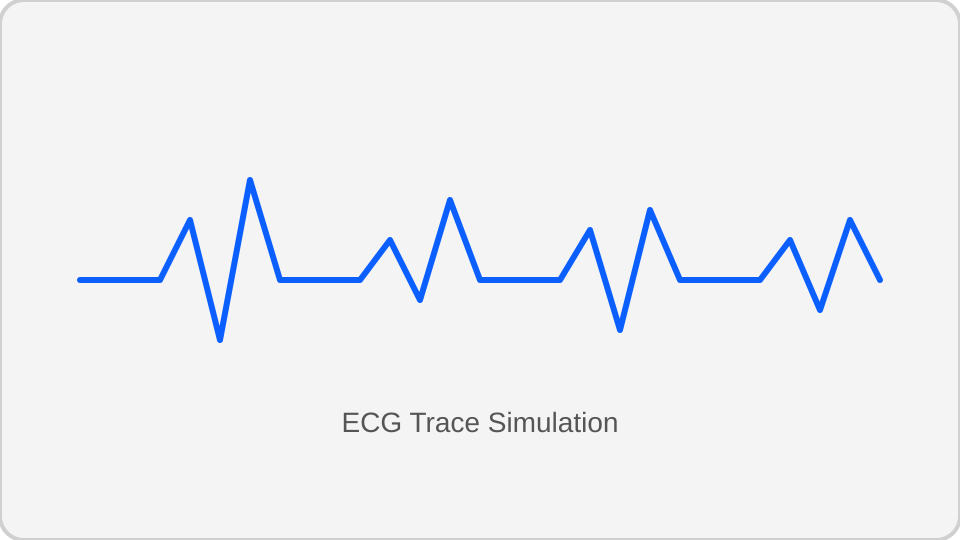
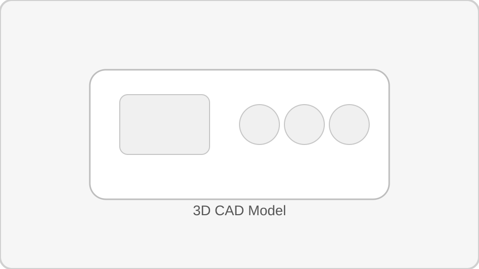

GitHub repository
Explore the simulator, firmware, and hardware notes in the public repo. Visit EduPace on GitHub →
TU Delft Minor Biomedical Engineering · 2025
EduPace is a blended software + hardware simulator that trains nurses and biomedical engineering students to configure a temporary external single-chamber pacemaker. The platform pairs a real-time ECG engine with a tactile control unit, so learners can practice pacing, sensing, and threshold tuning in a setting that mirrors the clinical workflow.
The report PDF will be uploaded here shortly. Check back in a few days for the full documentation.



EduPace is documented as an open, reproducible project. The codebase, firmware, and setup instructions live in the GitHub repository, and the final report will be published as a PDF on this site.
Explore the simulator, firmware, and hardware notes in the public repo. Visit EduPace on GitHub →
The finalized report will be uploaded as report.pdf in the next few days. Once published, it will be accessible directly from this page.
Bill of materials, enclosure files, and wiring diagrams will accompany the report release for reproducible fabrication.
Developed in the TU Delft Minor Biomedical Engineering, EduPace recreates the behavior of the Medtronic 53401 Temporary External Pacemaker for realistic training scenarios. Learners can rehearse device configuration, interpretation, and patient-response adjustments before entering the clinic. The simulator targets bradycardia caused by AV blocks, where dependable ventricular pacing is essential to restore adequate cardiac output and prevent hemodynamic collapse.
Models first-, second-, and third-degree AV blocks with realistic pacing response.
Builds muscle memory through rate, output, and sensitivity tuning on hardware.
Iterated with clinical staff to improve usability, realism, and ergonomics.
Temporary external pacemakers stabilize patients with bradycardia caused by sinoatrial-node dysfunction or atrioventricular (AV) blocks. Because these devices are used infrequently on the ward, many nurses do not practice the setup and adjustments needed to respond quickly in emergencies. EduPace closes that gap with a realistic, repeatable learning environment that mirrors real-world pacing workflows.
Many digital simulators show the interface but lack the tactile experience needed for confident device handling during acute care situations.
Build on the previous student prototype with improved hardware, ergonomics, and clinical realism guided by hospital feedback and real-world pacing workflows.
The EduPace system combines a browser-based simulator with Arduino-powered hardware to create a blended digital-physical learning environment. Each component is modular, so the platform can evolve with additional scenarios, devices, and assessment tooling.
Electron-packaged web app with dashboards, scenario selection, and real-time ECG feedback that mirrors pacemaker adjustments and clinical responses.
Arduino GIGA R1 with a touch display shield, rotary encoders for rate/output/sense, and on-screen LED indicators for pacing and sensing activity in the training loop.
Arduino GIGA R1 was selected for the display shield compatibility and higher graphics performance compared to the earlier Arduino Mega build.
The 800×480 touchscreen replaces 7-segment displays and reproduces labels, indicators, and lock/power states from the Medtronic 53401.
Incremental encoders emulate the click-by-click adjustment of rate, output, and sensitivity settings with directional logic.
The 3D-printed casing was refined to be thin, lightweight, and comfortable for one-handed use in training sessions.
EduPace progressed through rapid prototyping, clinical feedback sessions, and iterative refinements to the hardware, software, and enclosure. The team moved from an Arduino Mega-based prototype to the Arduino GIGA R1 platform, redesigned the enclosure multiple times for better ergonomics, and refined the ECG modeling to align with clinical pacing behavior and expected capture thresholds.
The space below is reserved for ongoing documentation, including a group presentation photo and additional screenshots as the project continues to evolve.



EduPace runs as a cross-platform web application packaged with Electron. The software is modular, separating ECG generation, pacing logic, scenario control, and device communication so new cases and features can be added without reworking the full system.
Encoder adjustments send rate/output/sense values to the simulator while software commands drive pacing/sensing LED indicators on the device display.
Scenario selection, ECG visualization, progress tracking, and session feedback are combined to guide learners through pacing practice and debriefs.
Pick a clinical case and review the baseline patient rhythm.
Use the knobs to tune rate, output, and sensitivity on the device.
Watch for pacing spikes, capture, and sensed events on the waveform.
Receive guidance on success criteria and time to stabilization.
Updated ECG modeling and pacing logic create a closer match to clinical expectations.
Nurses reported the interface felt closer to the Medtronic 53401 and easier to operate than the previous prototype.
Future iterations can add atrial and dual-chamber pacing modes, richer ECG superposition, and more scenarios.
ECG morphology research, pacing logic design, documentation lead.
Arduino integration, hardware interaction, serial communication.
Enclosure CAD, 3D printing, hardware assembly and testing.
UI/UX flow, WebSerial integration, scenario architecture.
The EduPace team thanks project supervisor Paul Verschuren and nurse Kim for providing clinical feedback, guidance, and support throughout development.
EduPace is for educational use only and is not a medical device.